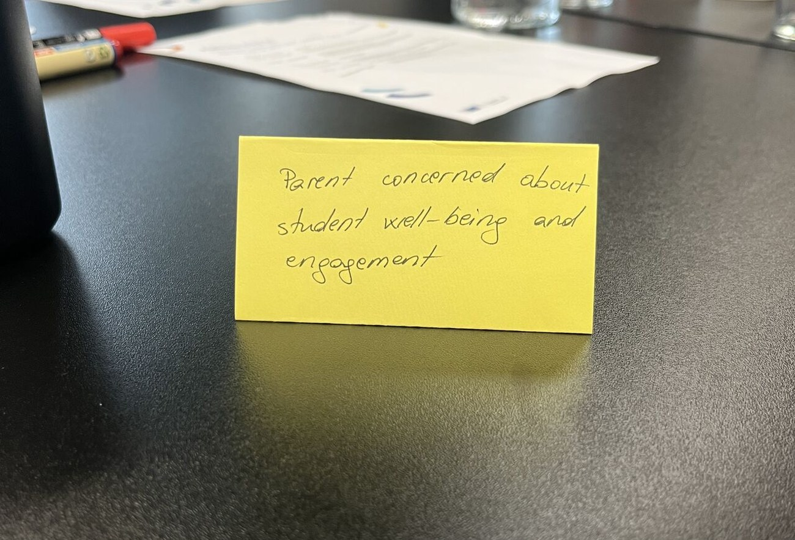

SQUAD 1 · FUTURE CLASSROOMS · DUBLIN, JULY 2025
Learning and space analytics
Dublin opened with a study visit to Trinity College Dublin, then empathy mapping and scenario design. I sat in the sub-group on data-informed design and wrote the section on learning and space analytics: what a space can reasonably tell you about learning, and where the line sits between designing with data and surveilling the people in the room.
